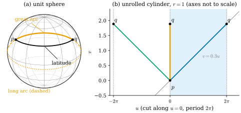
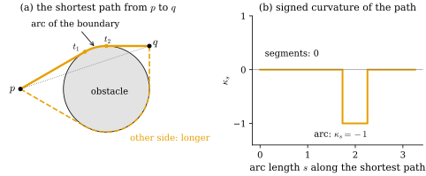
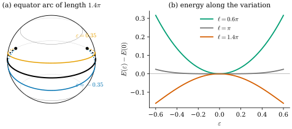

44.1 Shortest and Straightest
Goals
- 평면의 직선이 가진 두 특징, “가장 짧다”와 “가장 곧다”를 surface 위로 옮기고, \(\kappa_g \equiv 0\)인 곡선으로서 geodesic을 running example(sphere, cylinder, 평면)에서 알아볼 수 있다.
- locally shortest와 globally shortest를 구별하고, boundary가 있는 영역에서는 shortest path가 곧지 않을 수 있음을 예로 보일 수 있다.
- 곡선의 energy \(E(\gamma) = \tfrac12\int\abs{\gamma'}^2\,dt\)의 first variation을 계산해, energy의 critical point가 “가속도가 surface에 수직”인 곡선, 곧 일정한 속력의 \(\kappa_g = 0\)인 곡선임을 증명할 수 있다.
- geodesic이 energy의 minimum이 아니라 saddle point일 수 있음을 sphere의 긴 호에서 계산으로 보일 수 있다.
Prerequisites
- Section 39.2: Darboux frame Definition 39.2.1, Darboux equations와 \(\kappa_g\) Proposition 39.2.4, circle of latitude Example 39.2.6, helix Example 39.2.7, 방향을 바꿀 때의 부호 Exercise 39.2.1.
- Dirichlet energy Definition 42.2.1와 test function으로 함수를 판별하는 Lemma 35.5.7.
- 곡선의 길이 Definition 4.2.7와 “선분이 가장 짧다” Corollary 4.2.10. isometry와 local isometry Definition 7.2.1, Definition 7.2.4, 길이의 보존 Proposition 7.2.6, 평면을 cylinder에 감는 map Example 7.2.9.
- Tour: geodesic의 간단한 정의 Definition 0.5.4.
Motivation
Chapter 43은 metric을 \(e^{2\mu}\)배로 바꾸어도 각이 그대로임을 보았다(Definition 43.3.12). 그때 바뀌는 것은 길이이고, 길이가 바뀌면 두 점 사이의 가장 짧은 길도 바뀐다. 예를 들어 Mercator 지도의 metric은 sphere의 metric과 conformally equivalent하지만, 지도 위의 직선은 sphere 위에서 loxodrome이고, meridian과 적도를 빼면 great circle이 아니다(Example 38.2.10). “곧은 길”은 각이 아니라 metric이 정한다.
Section 39.2는 surface 위 곡선의 굽음을 두 조각으로 나누었다. surface가 강요하는 normal curvature \(\kappa_n\)과, 곡선이 surface 안에서 스스로 옆으로 꺾이는 geodesic curvature \(\kappa_g\)다(Proposition 39.2.4). 그 절의 Looking ahead 상자는 \(\kappa_g \equiv 0\)인 곡선을 “surface 위의 직선”으로 예고했다. 이 장은 그 곡선을 다룬다.
평면의 직선은 두 가지로 특징지을 수 있다. 두 점을 잇는 곡선 가운데 가장 짧고, 어디서도 꺾이지 않으므로 가장 곧다. 휘어진 surface 위에서도 두 성질을 각각 정의할 수 있고, smooth surface에서는 둘이 국소적으로 같은 곡선을 준다. 지구 위 항로의 great circle, 지도 앱이 도로망 graph에서 찾는 shortest path, 장애물을 피해 가는 로봇의 path, 중력장 속에서 빛이 지나는 길이 모두 이 문제의 변형이다 [CMU-DDG L21–22] slides 6–10. 이 절은 smooth 쪽을 정리한다. 두 특징이 같은 곡선을 주는 이유가 variational calculus에 있고, 그 계산이 Section 44.2–44.3에서 mesh 위의 두 정의가 왜 갈라지는지를 설명한다.
Two Features of a Line
평면에서 시작하자. \(p\)에서 \(q\)로 가는 어떤 곡선도 선분보다 짧지 않다(Corollary 4.2.10). 그리고 선분을 일정한 속력으로 지나면 가속도가 \(0\)이고, 곡선으로서 curvature가 \(0\)이다. 앞의 성질은 두 끝점을 주고 그 사이의 곡선을 찾는 boundary value problem의 답이고, 뒤의 성질은 한 점과 방향을 주고 앞으로 나아가는 initial value problem의 답이다. 이 구별은 Section 44.2(shortest)와 Section 44.3(straightest)에서 다시 중요해진다.
surface \(S\) 위에서 “가장 짧다”는 intrinsic distance \(d(p, q)\)를 이루는 곡선이라는 뜻이다. “가장 곧다”는 Section 39.2의 분해에서 곡선이 고를 수 있는 부분, 곧 \(\kappa_g\)가 \(0\)이라는 뜻이다. \(\kappa_n\)은 surface가 정하므로 곡선이 없앨 수 없다(Proposition 39.2.5) [CMU-DDG L21–22] slide 37.
Remark 44.1.1 (geodesics in this chapter). surface 위의 regular curve \(\gamma\)가 일정한 속력을 갖고 모든 점에서 \(\kappa_g = 0\)이면 \(\gamma\)를 geodesic(측지선)이라 부른다. Tour의 Definition 0.5.4는 “속력이 일정하고 가속도 \(\gamma''\)가 tangent plane에 수직”으로 정의했고, 둘이 같은 조건이라는 것이 아래 Proposition 44.1.9다. 정식 정의는 Track 3의 Section 9.5와 Section 23.1에 있다. 속력의 조건은 곡선의 모양이 아니라 parametrization에 대한 것이다. 곧은 곡선을 속력을 바꾸어 지나면 모양은 같지만 이 장의 뜻의 geodesic은 아니다.
Example 44.1.2 (lines, great circles, helices). (a) 평면 \(\mathbf{x}(u, v) = (u, v, 0)\)에서 \(\mathbf{N}\times\mathbf{t} = J\mathbf{t}\)이므로 \(\kappa_g = \kappa_s\)이다(Example 39.2.2(a)). geodesic은 일정한 속력으로 지나는 직선이다. (b) unit sphere의 적도 \(\theta = \pi/2\)는 Example 39.2.6의 \(\kappa_g = \cot\theta_0/r\)에서 \(\kappa_g = 0\)이다. sphere의 rotation은 \(\mathbf{N} = \mathbf{x}\)를 보존하고 \(\kappa_g\)를 보존하므로 모든 great circle이 geodesic이다. 거꾸로 unit sphere 위에서 \(\kappa_g \equiv 0\)이면 \(\kappa \equiv 1\)이고 그런 곡선은 great circle의 호뿐이다(Exercise 39.2.5). (c) 반지름 \(a\)인 cylinder 위의 helix \((a\cos t, a\sin t, bt)\)는 \(\kappa_g = 0\)이다(Example 39.2.7). \((a, b) = (1, 0.3)\)이면 속력은 \(\sqrt{1 + 0.09} = 1.04403\)으로 일정하다.
Verification: verify/v-44-1-shortest-straightest.py
Non-example 44.1.3 (circles of latitude). colatitude \(\theta_0 \ne \pi/2\)인 circle of latitude는 \(\kappa_g = \cot\theta_0 \ne 0\)(unit sphere, \(\varphi\)가 커지는 방향, 바깥쪽 \(\mathbf{N}\))이므로 geodesic이 아니다. northern hemisphere에서는 북극 쪽, 곧 왼쪽으로 꺾인다. 같은 원 위의 두 점 \(p = \mathbf{x}(\pi/3, -1.1)\), \(q = \mathbf{x}(\pi/3, 1.1)\)을 원을 따라 이으면 길이가 \(\sin(\pi/3)\cdot2.2 = 1.9053\)이지만, great circle의 짧은 호는 \(\arccos\inner{p}{q} = 1.7634\)이다. 곧지 않은 곡선은 짧지도 않다.
Verification: verify/v-44-1-shortest-straightest.py

Figure 44.1.1의 (a)를 보자. 두 점 \(p, q\)는 같은 위도에 있다. 위도를 따라가는 검은 호는 그 높이를 지키느라 계속 북쪽으로 꺾이고(Non-example 44.1.3), 그 대가로 더 길다. 주황 호는 꺾이지 않고 북극 쪽으로 불룩하게 지나간다. 지도에서 서울–뉴욕 항로가 북쪽으로 휘어 보이는 것과 같은 현상이다. 주황 점선은 같은 great circle의 나머지 부분이다. 이것도 꺾이지 않는 곡선이므로 geodesic이지만 짧지 않다. 이 차이는 아래의 locally shortest와 Example 44.1.11에서 다룬다.
두 특징이 언제나 같은 곡선을 주는 것은 아니다. 영역에 boundary가 있으면 shortest path는 boundary에 붙어 꺾일 수 있다 [CMU-DDG L21–22] slide 8.
Example 44.1.4 (an obstacle in the plane). 평면에서 열린 unit disk를 뺀 영역 \(\Omega = \{\abs{x} \ge 1\}\)에서 \(p = (-2, 0)\)과 \(q = (1, 1)\)을 잇는 shortest path를 구하자. 선분 \(pq\)는 원점에서 거리 \(2/\sqrt{10} = 0.632\)인 점을 지나므로 disk를 지나고, 쓸 수 없다. \(p\)에서 unit circle에 그은 위쪽 접선의 접점은 \(t_1 = (\cos\tfrac{2\pi}3, \sin\tfrac{2\pi}3)\)이고(\(\inner{t_1 - p}{t_1} = 0\), 접선의 길이 \(\sqrt3\)), \(q\)에서 그은 위쪽 접선의 접점은 \(t_2 = (0, 1)\)이다(접선의 길이 \(1\)). 선분 \(pt_1\), 중심각 \(\tfrac{2\pi}3 - \tfrac\pi2 = \tfrac\pi6\)인 원의 호 \(t_1t_2\), 선분 \(t_2q\)를 이은 곡선의 길이는
\[ \sqrt3 + \frac\pi6 + 1 = 3.2556 \]
이다. 아래로 도는 같은 꼴의 곡선(접점 \((\cos\tfrac{4\pi}3, \sin\tfrac{4\pi}3)\)과 \((1, 0)\), 호의 중심각 \(\tfrac{2\pi}3\))은 길이가 \(\sqrt3 + \tfrac{2\pi}3 + 1 = 4.8264\)로 더 길다. 위쪽 곡선이 shortest path다. 두 선분 위에서는 \(\kappa_s = 0\)이지만 호 위에서는 \(\abs{\kappa_s} = 1\)이다. 그러므로 이 shortest path는 “곧다”는 조건을 boundary 위에서 깬다. 짧은 이유는 “\(\Omega\) 안의 곡선만 비교한다”는 제약 때문이다. \(\Omega\)의 interior 안에서는 shortest path가 여전히 곧다. 이 곡선이 shortest라는 것은 여기서 받아들인다. 접선과 호로 이루어진 이 곡선은 disk와 \(p, q\)의 convex hull의 위쪽 boundary이고, disk를 위로 돌아가는 곡선은 이 convex 영역의 boundary보다 짧을 수 없다는 것이 그 이유다(아래로 돌아가는 곡선은 아래쪽 boundary보다 짧을 수 없다). Exercise 44.1.4(a)는 polygonal path 하나와 비교한다.
Verification: verify/v-44-1-shortest-straightest.py

Figure 44.1.2의 (a)에서 주황 곡선은 \(p\)에서 disk에 접하는 \(t_1\)까지 곧게 가고, \(t_2\)까지 disk의 boundary를 따라간 뒤 다시 곧게 \(q\)로 간다. 점선 곡선도 같은 꼴이지만 disk를 훨씬 많이 돌아서 길다. (b)에서 curvature가 \(0\)이 아닌 구간은 정확히 path가 disk의 boundary에 닿아 있는 구간이다. path가 disk에서 떨어져 있는 곳에서는 앞뒤의 곡선을 조금 바꾸어도 \(\Omega\)를 벗어나지 않으므로, 그곳은 평면의 선분처럼 곧아야 한다. disk에 닿은 곳에서는 안쪽으로 줄일 수가 없다. 이 장은 boundary가 없는 surface를 주로 다루고(slide 8), 이 예는 “shortest이면 straightest”가 무엇에 기대는지 보여 주는 데 쓴다.
Isometry Invariance
길이는 surface 안의 측정만으로 정해진다. 그래서 shortest path는 surface를 늘이지 않고 구부려도 shortest path로 남는다 [CMU-DDG L21–22] slide 11.
Proposition 44.1.5 (isometries preserve distance and shortest curves). \(\psi\colon S_1 \to S_2\)가 isometry(Definition 7.2.1)이면 모든 \(p, q \in S_1\)에서 \(d(\psi(p), \psi(q)) = d(p, q)\)이고, \(p\)에서 \(q\)로 가는 곡선 \(\gamma\)가 shortest이면 \(\psi\circ\gamma\)도 shortest이다.
Proof. \(S_1\) 안의 piecewise smooth 곡선 \(\gamma\)에 대하여 \(L(\psi\circ\gamma) = L(\gamma)\)이다(Proposition 7.2.6을 조각마다 쓴다). \(\psi\)는 diffeomorphism이므로 \(\gamma \mapsto \psi\circ\gamma\)는 \(p\)에서 \(q\)로 가는 곡선 전체와 \(\psi(p)\)에서 \(\psi(q)\)로 가는 곡선 전체 사이의 bijection이다(역은 \(\psi^{-1}\circ\)). 길이를 보존하는 bijection이므로 두 집합의 길이의 inf가 같고, \(\gamma\)가 inf를 이루면 \(\psi\circ\gamma\)도 inf를 이룬다.
local isometry에서는 이 명제가 그대로 성립하지 않는다. 곡선의 길이는 보존되지만 곡선 전체의 bijection이 깨지기 때문이다. 아래 예가 그것을 보여 준다. 그래도 local isometry는 geodesic을 geodesic으로 보낸다. geodesic의 조건이 first fundamental form만으로 쓰인다는 것이 Section 44.5의 geodesic equation이다(Section 44.5).
Example 44.1.6 (geodesics on the cylinder). Example 7.2.9의 map(\(r = 1\)) \((u, v) \mapsto \mathbf{x}(u, v) = (\cos u, \sin u, v)\)는 평면에서 cylinder로 가는 local isometry다. 평면의 직선 \(t \mapsto (\alpha t, \beta t)\)는 \(\kappa_g = 0\)인 곡선 \(\mathbf{x}(\alpha t, \beta t)\)로 간다. \(\beta = 0\)이면 circle of latitude, \(\alpha = 0\)이면 vertical line, 둘 다 \(0\)이 아니면 helix다(\((a, b) = (1, \beta/\alpha)\)인 helix(Notation)를 다시 parametrize한 것). 거꾸로 cylinder의 모든 geodesic은 평면의 직선을 일정한 속력으로 지나는 곡선의 image다. \(\gamma = \mathbf{x}\circ c\), \(c = (u, v)\)이면 \(\inner{\gamma''}{\mathbf{x}_u} = u''\), \(\inner{\gamma''}{\mathbf{x}_v} = v''\)이므로, 아래 Proposition 44.1.9(b)의 조건은 \(u'' = v'' = 0\)과 같기 때문이다. 따라서 \(p = \mathbf{x}(0, 0)\)에서 \(q = \mathbf{x}(0, H)\)로 가는 geodesic은 평면에서 \((0, 0)\)과 \((2\pi k, H)\)(\(k \in \Z\))를 잇는 선분의 image이고, 길이는 \(\sqrt{4\pi^2k^2 + H^2}\)이다. shortest는 \(k = 0\)인 vertical segment 하나뿐이다. \(H = 0.6\pi\)(helix \((1, 0.3)\)의 한 바퀴의 높이)이면 \(k = \pm1\)의 길이가 \(2\pi\sqrt{1.09} = 6.560\)이다(Figure 44.1.1(b)). \(k = 1\)인 선분은 평면에서 shortest지만 그 image는 cylinder에서 shortest가 아니다. local isometry는 shortest를 보존하지 않는다.
Verification: verify/v-44-1-shortest-straightest.py
Figure 44.1.1의 (b)로 돌아가 보자. 펼친 평면에서는 세 선분이 모두 직선이다. 직선은 펼쳐 놓은 평면의 어느 작은 조각 안에서도 가장 짧으므로, cylinder 위의 세 곡선도 짧은 구간마다 가장 짧다. 그러나 cylinder 위에서 \(q\)의 “사본”은 \(u = 2\pi k\)마다 하나씩 있고, 가장 가까운 사본으로 가는 주황 선분만이 전체로서 가장 짧다.
Locally Shortest and Globally Shortest
곡선 \(\gamma\colon[a, b] \to S\)가 locally shortest(국소 최단)라는 것은 모든 \(t_0 \in [a, b]\)에 대하여 \(t_0\)의 \([a, b]\)에서의 neighborhood인 구간 \([t_1, t_2]\)(\(t_1 \lt t_2\). \(t_0\)이 끝점 \(a, b\)가 아니면 \(t_1 \lt t_0 \lt t_2\))가 있어 \(\gamma|_{[t_1, t_2]}\)가 \(\gamma(t_1)\)과 \(\gamma(t_2)\)를 잇는 shortest 곡선이라는 뜻이다 [CMU-DDG L21–22] slide 14. 전체 \([a, b]\)에서 shortest이면 globally shortest(전역 최단)라 한다. 끝점이 정해지지 않은 직선 전체를 “가장 짧은 곡선”으로 말하려면 locally shortest라는 말이 필요하다.
sphere의 긴 호(Figure 44.1.1(a)의 주황 점선)는 locally shortest이지만 globally shortest가 아니다. 같은 끝점을 잇는 짧은 호가 있기 때문이다. cylinder의 helix 한 바퀴(Example 44.1.6)도 그렇다. smooth surface에서 geodesic은 언제나 locally shortest이다. 이 사실은 Gauss lemma가 필요하므로 여기서는 받아들이고 Section 23.4로 보낸다 [dC §4-6]. 반대 방향, 곧 “shortest이면 geodesic”은 다음 절의 variational 계산으로 바로 증명된다(Corollary 44.1.10).
The Variational View: Length and Energy
길이 \(L(\gamma) = \int_a^b\abs{\gamma'}\,dt\)는 parametrization에 무관하다. 그래서 길이를 최소화하는 곡선은 parametrization이 정해지지 않고, 적분 안의 \(\abs{\gamma'}\)는 \(\gamma' = 0\)인 곳에서 미분할 수 없다. 더 다루기 쉬운 양은
이다. 이것을 곡선의 energy(에너지)라 하자. \(\gamma\)의 성분 함수마다 Definition 42.2.1의 Dirichlet energy를 구간 \([a, b]\) 위에서 계산해 더한 것이다. 강의 슬라이드가 같은 양(\(\tfrac12\) 없이)을 Dirichlet energy라 부르는 이유다 [CMU-DDG L21–22] slide 15.
Lemma 44.1.7 (length and energy). piecewise smooth 곡선 \(\gamma\colon[a, b] \to \R^n\)에 대하여 \(L(\gamma)^2 \le 2(b - a)\,E(\gamma)\)이고, 등호는 \(\abs{\gamma'}\)가 (꺾이는 점을 빼고) 상수일 때만 성립한다.
Proof. 함수 \(1\)과 \(\abs{\gamma'}\)에 대한 Cauchy–Schwarz inequality \(\big(\int_a^b1\cdot\abs{\gamma'}\,dt\big)^2 \le \int_a^b1\,dt\int_a^b\abs{\gamma'}^2\,dt\)가 곧 \(L^2 \le (b - a)\cdot2E\)이다. 등호는 \(\abs{\gamma'}\)가 \(1\)의 상수배일 때, 곧 속력이 일정할 때만 성립한다.
이 부등식이 말하는 것. 끝점과 구간 \([a, b]\)를 고정하면 energy를 최소화하는 곡선은 길이를 최소화하고 일정한 속력으로 지나는 곡선이다. 실제로 길이 \(\ell\)인 곡선을 일정한 속력으로 다시 parametrize하면 energy가 \(\ell^2/(2(b - a))\)가 되고, 이것은 그 곡선의 다른 어떤 parametrization의 energy보다도 크지 않다. 길이를 줄이는 문제와 energy를 줄이는 문제는 parametrization의 자유를 빼면 같은 문제다(slide 15).
이제 energy의 first variation을 계산한다. 평면(일반적으로 \(\R^n\))부터 하자. 끝점이 고정된 smooth \(\eta\colon[a, b] \to \R^n\)(\(\eta(a) = \eta(b) = 0\))에 대하여 \(\gamma + \varepsilon\eta\)를 생각하면
이다. 첫 등호는 \(\tfrac12\abs{\gamma' + \varepsilon\eta'}^2\)를 \(\varepsilon\)으로 미분한 것이고, 둘째 등호는 integration by parts에서 boundary 항 \(\big[\inner{\gamma'}{\eta}\big]_a^b\)가 \(\eta(a) = \eta(b) = 0\)으로 사라진 것이다.
Proposition 44.1.8 (critical points of the energy in \(\R^n\)). smooth 곡선 \(\gamma\colon[a, b] \to \R^n\), \(\gamma(a) = p\), \(\gamma(b) = q\)에 대하여 다음은 동치다.
- (a) 끝점이 고정된 모든 \(\eta\)에서 (44.1.2)가 \(0\)이다(\(\gamma\)는 \(E\)의 critical point다).
- (b) \(\gamma'' \equiv 0\).
- (c) \(\gamma(t) = p + \tfrac{t - a}{b - a}(q - p)\).
이때 \(\gamma\)는 같은 끝점과 같은 구간을 갖는 곡선 가운데 \(E\)의 유일한 minimizer다.
Proof. (a)⇒(b): \(\eta\)의 한 성분만 \(0\)이 아니게 고르면 모든 끝점이 \(0\)인 \(h\)에 대하여 \(\int_a^b\gamma''^k h\,dt = 0\)이다. \(\gamma''^k\)는 연속이므로 Lemma 35.5.7(\(U = (a, b)\), 0-form)에서 \(\gamma''^k = 0\)이다. (b)⇒(c): 두 번 적분하면 \(\gamma\)는 \(t\)의 1차식이고, 끝점의 조건이 coefficient를 정한다. (c)⇒(a): \(\gamma'' = 0\)이므로 (44.1.2)가 \(0\)이다. 마지막 주장: \(\gamma'\)가 상수이므로 \(\int\inner{\gamma'}{\eta'}\,dt = \inner{\gamma'}{\eta(b) - \eta(a)} = 0\)이고, 따라서 \(E(\gamma + \eta) = E(\gamma) + \tfrac12\int\abs{\eta'}^2\,dt \ge E(\gamma)\)이다. 등호이면 \(\eta' \equiv 0\)이고 \(\eta(a) = 0\)에서 \(\eta \equiv 0\)이다.
이 명제가 말하는 것. 끝점을 고정한 energy의 critical point는 1차원 Laplace equation \(\gamma'' = 0\)의 해, 곧 선분이다. 슬라이드는 이것을 “geodesic은 harmonic function”이라고 요약한다 [CMU-DDG L21–22] slide 16. 평면에서는 이 방정식이 linear라 해가 하나뿐이고 그것이 minimum이다.
surface 위에서는 곡선을 surface 안에서만 움직일 수 있다. \(\gamma = \mathbf{x}\circ c\)가 하나의 parametrization \(\mathbf{x}\colon U \to \R^3\)의 상 안에 있다고 하자(\(c\colon[a, b] \to U\)). 끝점이 \(0\)인 smooth \(\eta\colon[a, b] \to \R^2\)에 대하여 \(c + \varepsilon\eta\)는 작은 \(\varepsilon\)에서 \(U\) 안에 있다(\(c([a, b])\)는 compact이고 \(U\)는 open set이다). 그러면 \(\gamma_\varepsilon := \mathbf{x}\circ(c + \varepsilon\eta)\)는 surface 위의 곡선이고 끝점이 고정되어 있다. 그 variation field(변분장)는
\[ W(t) := \left.\partial_\varepsilon\gamma_\varepsilon(t)\right|_{\varepsilon=0} = \sum_{i=1}^2\eta^i(t)\,\mathbf{x}_i(c(t)) \]
로 tangent vector이고, \(W(a) = W(b) = 0\)이다. mixed partial derivative의 순서를 바꾸면 \(\partial_\varepsilon\gamma_\varepsilon' = W'\)이므로 (44.1.2)와 같은 계산으로 \(\tfrac{d}{d\varepsilon}E(\gamma_\varepsilon)\big|_0 = -\int_a^b\inner{\gamma''}{W}\,dt\)이다.
Proposition 44.1.9 (critical points of the energy on a surface). regular curve \(\gamma = \mathbf{x}\circ c\colon[a, b] \to S\)가 하나의 parametrization의 상 안에 있다고 하자. 다음은 동치다.
- (a) 끝점이 \(0\)인 모든 \(\eta\)에 대하여 \(\tfrac{d}{d\varepsilon}E(\mathbf{x}\circ(c + \varepsilon\eta))\big|_{\varepsilon=0} = 0\)이다.
- (b) 모든 \(t\)에서 \(\gamma''(t)\)가 \(T_{\gamma(t)}S\)에 수직이다.
- (c) \(\gamma\)는 속력이 일정하고 모든 점에서 \(\kappa_g = 0\)이다. 곧 Remark 44.1.1의 뜻의 geodesic이다.
Proof idea: 가속도 가운데 surface를 따라가는 부분만이 energy를 바꾼다. 그 부분이 \(0\)이면 속력이 변하지 않고, arc length로 다시 쓰면 그것이 곧 \(\kappa_g\)다.
Proof. (a)⇔(b): 위의 계산에서 (a)의 미분은 \(-\int_a^b\sum_i\eta^i\inner{\gamma''}{\mathbf{x}_i(c(t))}\,dt\)이다. (b)이면 이것이 \(0\)이다. 거꾸로 (a)이면 \(\eta\)의 한 성분만 \(0\)이 아니게 골라 Lemma 35.5.7을 쓰면 \(i = 1, 2\)에서 \(\inner{\gamma''}{\mathbf{x}_i} \equiv 0\)이다. \(\mathbf{x}_1, \mathbf{x}_2\)가 \(T_{\gamma(t)}S\)를 펼치므로 (b)이다. (b)⇒(c): \(\gamma'\)는 tangent이므로 \(\tfrac{d}{dt}\abs{\gamma'}^2 = 2\inner{\gamma''}{\gamma'} = 0\)이고 속력 \(v_0 = \abs{\gamma'}\)는 양의 상수다. arc length \(s = v_0(t - a)\)로 쓰면 \(\mathbf{t} = \gamma'/v_0\), \(d\mathbf{t}/ds = \gamma''/v_0^2\)이고, 이것이 \(T_\gamma S\)에 수직이므로 \(\kappa_g = \inner{d\mathbf{t}/ds}{\mathbf{N}\times\mathbf{t}} = 0\)이다(\(\mathbf{N}\times\mathbf{t}\)는 tangent). (c)⇒(b): 속력이 상수 \(v_0\)이면 \(\gamma'' = v_0^2\,d\mathbf{t}/ds\)이고, (39.2.2)의 첫 식에서 \(d\mathbf{t}/ds = \kappa_g\,\mathbf{N}\times\mathbf{t} + \kappa_n\mathbf{N} = \kappa_n\mathbf{N}\)이므로 \(\gamma''\)는 \(\mathbf{N}\)에 평행하다.
이 명제가 말하는 것. “energy의 critical point”(variational), “가속도가 surface에 수직”(Tour의 정의), “속력이 일정하고 옆으로 꺾이지 않는다”(Section 39.2의 언어)는 같은 조건이다 [CMU-DDG L21–22] slide 17. 셋째 조건의 “속력이 일정”은 첫째 조건에서 저절로 나온다. energy는 parametrization까지 고르기 때문이다. 이 명제는 하나의 parametrization 안의 곡선에 대한 것이지만, (b)와 (c)는 점마다의 조건이므로 긴 곡선은 조각으로 나누어 쓰면 된다.
Corollary 44.1.10 (shortest curves are geodesics). boundary가 없는 surface에서 regular curve \(\gamma\colon[a, b] \to S\)가 일정한 속력으로 parametrize되어 있고 \(\gamma(a)\)와 \(\gamma(b)\)를 잇는 shortest 곡선이면 \(\gamma\)는 geodesic이다.
Proof. 점마다의 조건이므로 \(\gamma\)를 짧은 조각 \([t_1, t_2]\)로 나누어 각 조각이 하나의 parametrization의 상 안에 있다고 해도 된다. shortest 곡선의 부분은 그 끝점 사이의 shortest 곡선이다(더 짧은 곡선이 있으면 바꾸어 끼워 전체가 짧아진다). 그 조각에서 \(\gamma_\varepsilon = \mathbf{x}\circ(c + \varepsilon\eta)\)는 같은 끝점을 잇는 곡선이므로 Lemma 44.1.7에서
\[ E(\gamma_\varepsilon) \ge \frac{L(\gamma_\varepsilon)^2}{2(t_2 - t_1)} \ge \frac{L(\gamma)^2}{2(t_2 - t_1)} = E(\gamma) \]
이다. 마지막 등호는 속력이 일정하기 때문이다. 곧 \(\varepsilon \mapsto E(\gamma_\varepsilon)\)는 \(\varepsilon = 0\)에서 최소이므로 미분이 \(0\)이고, Proposition 44.1.9에서 그 조각은 geodesic이다.
boundary가 없다는 가정이 Example 44.1.4와의 차이다. disk에 닿은 호에서는 \(\eta\)를 disk 쪽으로 움직일 수 없으므로 \(\varepsilon \lt 0\)인 variation이 허용되지 않고, 미분이 \(0\)이라는 결론이 나오지 않는다.
평면과 달리 surface에서는 critical point가 minimum이라는 보장이 없다. 가속도의 조건 (b)는 \(\gamma\)에 대해 nonlinear이고, 같은 끝점을 잇는 critical point가 여럿일 수 있다. 슬라이드는 sphere의 짧은 호와 긴 호를 minimum과 saddle point로 비교한다(slide 17). 아래 예는 긴 호가 saddle point임을 계산으로 확인한다.
Example 44.1.11 (the long arc is a saddle point). unit sphere의 적도의 호 \(\gamma(t) = \mathbf{x}(\pi/2, t)\), \(0 \le t \le \ell\)(\(0 \lt \ell \lt 2\pi\))를 생각하자. 속력은 \(1\)이고 \(E(\gamma) = \ell/2\)이다. 끝점을 고정한 variation
\[ \gamma_\varepsilon(t) = \mathbf{x}\big(\tfrac\pi2 - \varepsilon\sin(\pi t/\ell),\ t\big) \]
은 적도에서 위(\(\varepsilon \gt 0\))나 아래로 부풀린 곡선이다. sphere의 \(E = 1\), \(G = \sin^2\theta\)(Notation)에서 \(\abs{\gamma_\varepsilon'}^2 = \theta'^2 + \sin^2\theta\cdot1^2\), 곧 \(\abs{\gamma_\varepsilon'}^2 = \varepsilon^2\tfrac{\pi^2}{\ell^2}\cos^2\tfrac{\pi t}\ell\) \(+ \cos^2\big(\varepsilon\sin\tfrac{\pi t}\ell\big)\)이다. \(\varepsilon\)으로 두 번 미분해 \(\varepsilon = 0\)을 넣으면 첫 항에서 \(2\tfrac{\pi^2}{\ell^2}\cos^2\tfrac{\pi t}{\ell}\), 둘째 항에서 \(-2\sin^2\tfrac{\pi t}\ell\)이 나오고, \(\int_0^\ell\cos^2\tfrac{\pi t}\ell\,dt = \int_0^\ell\sin^2\tfrac{\pi t}\ell\,dt = \tfrac\ell2\)이므로
이다. \(\ell \lt \pi\)이면 양수, \(\ell = \pi\)이면 \(0\), \(\ell \gt \pi\)이면 음수다. \(\ell \gt \pi\)이면 작은 \(\varepsilon \ne 0\)에서 \(E(\gamma_\varepsilon) \lt E(\gamma)\)이고, Lemma 44.1.7에서 \(L(\gamma_\varepsilon)^2 \le 2\ell E(\gamma_\varepsilon) \lt \ell^2\), 곧 \(\gamma_\varepsilon\)이 더 짧다. 한편 같은 곡선을 속력만 바꾸어 지나는 variation \(\gamma(h(t))\)(\(h(0) = 0\), \(h(\ell) = \ell\), \(h' \not\equiv 1\))은 길이가 같고 속력이 일정하지 않으므로 Lemma 44.1.7에서 energy가 늘어난다. energy가 어떤 방향으로는 줄고 어떤 방향으로는 느는 critical point, 곧 saddle point다. \(\ell = 1.4\pi\)이면 (44.1.3)은 \(-1.0771\), \(\ell = 0.6\pi\)이면 \(+1.6755\)이다.
Verification: verify/v-44-1-shortest-straightest.py

Figure 44.1.3의 (a)에서 주황과 파랑 곡선은 검은 호보다 짧다. 검은 호는 대척점을 지나므로, 대척점 근처에서 위나 아래로 빗겨 가면 거리를 줄일 수 있다. (b)는 이것을 energy로 본다. 같은 \(\varepsilon\)이라도 \(\ell\)에 따라 그래프가 위로도 아래로도 휜다. \(\ell = \pi\)에서 2차 항이 사라지는 것은 \(p\)에서 대척점까지 가는 반원들이 모두 길이 \(\pi\)로 같기 때문이고, 이 경계를 Track 3은 conjugate point라 부른다.
Summary
- 평면의 직선은 shortest이고 straightest이다. surface 위에서 straightest는 일정한 속력의 \(\kappa_g = 0\)이고, 그런 곡선을 geodesic이라 부른다(Remark 44.1.1). great circle, helix, 직선이 예이고 circle of latitude는 아니다.
- boundary가 있으면 shortest path가 boundary에 붙어 꺾일 수 있다(Example 44.1.4).
- isometry는 거리와 shortest 곡선을 보존한다(Proposition 44.1.5). local isometry는 shortest를 보존하지 않는다(cylinder, Example 44.1.6).
- \(L^2 \le 2(b - a)E\)(Lemma 44.1.7). energy의 critical point는 \(\R^n\)에서 선분이고(Proposition 44.1.8), surface에서는 가속도가 surface에 수직인 곡선, 곧 geodesic이다(Proposition 44.1.9). shortest 곡선은 geodesic이다(Corollary 44.1.10).
- geodesic은 locally shortest이지만 globally shortest일 필요는 없고, energy의 saddle point일 수 있다(sphere의 긴 호, (44.1.3)).
다음 절에서는 shortest를 출발점으로 polyhedral surface의 geodesic을 찾는다. edge graph의 shortest path는 왜 답이 아닌지, triangle을 펼치면 무엇이 직선이 되는지, 그리고 vertex의 angle defect가 shortest path를 어떻게 막거나 갈라놓는지를 본다.
Exercises
Exercise 44.1.1 ★ 반지름 \(r\)인 cylinder \(\mathbf{x}(u, v) = (r\cos u, r\sin u, v)\) 위의 두 점 \(p = \mathbf{x}(0, 0)\), \(q = \mathbf{x}(\pi, h)\)(\(h \gt 0\))를 잇는 geodesic을 모두 구하고 그 길이를 써라. shortest는 몇 개인가?
Hint
arc length 좌표 \((ru, v)\)로 펼치면 cylinder는 평면의 띠 \(0 \le ru \lt 2\pi r\)를 감은 것이다(Example 7.2.9).
Solution
\((s, v) = (ru, v)\)로 펼치면 local isometry \((s, v) \mapsto \mathbf{x}(s/r, v)\)가 평면을 cylinder에 감는다(Example 7.2.9). geodesic은 평면의 직선의 image다(Example 44.1.6와 같은 논법). \(p\)의 펼친 점을 \((0, 0)\)으로 두면 \(q\)의 펼친 점은 \((r(\pi + 2\pi k), h)\)(\(k \in \Z\))이고, 각 \(k\)마다 선분 하나가 geodesic을 준다. 길이는 \(\sqrt{r^2\pi^2(2k + 1)^2 + h^2}\)이다. \(\abs{2k + 1}\)이 가장 작은 \(k = 0\)과 \(k = -1\)이 같은 길이 \(\sqrt{r^2\pi^2 + h^2}\)을 주므로 shortest는 두 개다. 하나는 \(u\)가 커지는 쪽으로, 다른 하나는 작아지는 쪽으로 반 바퀴 감는 helix다. 나머지는 locally shortest이지만 globally shortest가 아니다.
Exercise 44.1.2 ★ 선분 \(\gamma_1(t) = (t, 0)\)와 \(\gamma_2(t) = (t^2, 0)\)(\(0 \le t \le 1\))의 길이와 energy를 구하고 Lemma 44.1.7의 부등식과 등호 조건을 확인하여라.
Solution
둘 다 \((0, 0)\)에서 \((1, 0)\)으로 가는 같은 선분이므로 \(L = 1\)이다. \(E(\gamma_1) = \tfrac12\int_0^11\,dt = \tfrac12\), \(E(\gamma_2) = \tfrac12\int_0^1(2t)^2\,dt = \tfrac23\)이다. \(L^2 = 1 \le 2\cdot1\cdot E\)는 \(\gamma_1\)에서 등호(\(1 = 1\)), \(\gamma_2\)에서 \(1 \lt \tfrac43\)이다. \(\gamma_1\)의 속력은 일정하고 \(\gamma_2\)의 속력 \(2t\)는 일정하지 않다. 곧 같은 모양이라도 속력을 바꾸면 energy가 커지고, 따라서 \(\gamma_2\)는 energy의 critical point가 아니다. 실제로 \(\gamma_2'' = (2, 0) \ne 0\)이다(Proposition 44.1.8).
Exercise 44.1.3 ★ unit sphere 위에서 (a) meridian \(\gamma(t) = \mathbf{x}(t, \varphi_0)\)(\(0 \lt t \lt \pi\))와 (b) circle of latitude \(\beta(t) = \mathbf{x}(\theta_0, t)\)의 가속도를 계산하고, Proposition 44.1.9(b)를 써서 어느 것이 geodesic인지 판정하여라.
Solution
(a) \(\gamma(t) = (\sin t\cos\varphi_0, \sin t\sin\varphi_0, \cos t)\)이므로 \(\gamma'' = -\gamma\)이다. unit sphere에서 \(\gamma\)는 normal \(\mathbf{N}\)이므로 \(\gamma''\)는 tangent plane에 수직이고, meridian은 geodesic이다. (b) \(\beta'' = (-\sin\theta_0\cos t, -\sin\theta_0\sin t, 0)\)이다. \(\mathbf{N} = \beta\)와의 inner product는 \(-\sin^2\theta_0\)이므로 normal 성분은 \(-\sin^2\theta_0\,\mathbf{N}\)이고, tangent 성분은 \(\beta'' + \sin^2\theta_0\,\beta\)이고, 이것은 \(\sin\theta_0\cos\theta_0\)에 vector \((-\cos\theta_0\cos t, -\cos\theta_0\sin t, \sin\theta_0)\)를 곱한 것이다. 그 vector는 (39.2.1)의 \(\mathbf{N}\times\mathbf{t}\)이므로 tangent 성분은 \(\sin\theta_0\cos\theta_0\,\mathbf{N}\times\mathbf{t}\)이고, \(\theta_0 = \pi/2\)일 때만 \(0\)이다. 속력 \(\sin\theta_0\)의 제곱으로 나누면 \(\kappa_g = \cot\theta_0\)이 다시 나온다(Example 39.2.6). 적도만 geodesic이다.
Exercise 44.1.4 ★ 참인지 거짓인지 말하고 이유를 써라. (a) Example 44.1.4에서 \(t_1\)에서의 접선과 \(t_2\)에서의 접선이 만나는 점을 \(m\)이라 하면, polygonal path \(p\)–\(m\)–\(q\)는 disk와 만나지 않고 그 예의 shortest path보다 길다. (b) unit sphere 위의 geodesic의 길이가 \(\pi\)보다 길면 그 곡선은 끝점 사이의 shortest 곡선이 아니다. (c) local isometry는 shortest 곡선을 shortest 곡선으로 보낸다.
Solution
(a) 참. \(t_2 = (0, 1)\)에서의 접선은 \(y = 1\)이고 \(t_1\)에서의 접선은 \(-\tfrac12x + \tfrac{\sqrt3}2y = 1\)이므로 \(m = (\sqrt3 - 2, 1)\)이다. 두 선분은 unit circle의 접선 위에 있고 접선은 closed disk과 접점에서만 만나므로, polygonal path는 open disk과 만나지 않는다. 두 접선이 이루는 각에서 \(\abs{t_1 - m} = \abs{t_2 - m} = \tan\tfrac\pi{12} = 2 - \sqrt3\)이고, 길이는 \(\abs{p - m} + \abs{m - q}\) \(= 2 + (3 - \sqrt3)\) \(= 5 - \sqrt3 = 3.2679\)로 \(3.2556\)보다 크다. 차이는 접점 사이에서 polygonal path \(t_1\)–\(m\)–\(t_2\)(길이 \(2\tan\tfrac\pi{12} = 0.5359\))를 호(길이 \(\tfrac\pi6 = 0.5236\))로 바꾼 데서 온다. \(0 \lt x \lt \tfrac\pi2\)에서 \(\tan x \gt x\)이므로 호가 polygonal path보다 짧다. (b) 참. unit sphere의 두 점 \(p, q\)는 둘을 지나는 great circle의 짧은 호로 이어지고 그 길이는 \(\arccos\inner{p}{q} \le \pi\)이다. 따라서 \(d(p, q) \le \pi\)이고, 길이가 \(\pi\)보다 긴 곡선은 geodesic이든 아니든 shortest가 아니다. (c) 거짓. Example 44.1.6에서 평면의 선분 \((0, 0)\)–\((2\pi, H)\)는 평면에서 shortest이지만 cylinder 위의 image는 길이 \(6.560\)으로 vertical segment \(1.885\)보다 길다.
Exercise 44.1.5 ★★ Example 44.1.11의 bump를 \(\sin(\pi t/\ell)\) 대신 \(\sin(m\pi t/\ell)\)(\(m = 1, 2, \dots\))로 바꾸면 (44.1.3)이 어떻게 되는지 계산하여라. 길이 \(\ell = 2.5\pi\)인 적도의 호(적도를 한 바퀴 넘게 도는 곡선, \(\gamma(t) = \mathbf{x}(\pi/2, t)\))에서 energy를 줄이는 이 꼴의 \(m\)은 몇 개인가?
Solution
같은 계산에서 \(\cos^2(m\pi t/\ell)\)과 \(\sin^2(m\pi t/\ell)\)의 적분이 모두 \(\ell/2\)이므로 \(\tfrac{d^2}{d\varepsilon^2}E = \tfrac\ell2\big(\tfrac{m^2\pi^2}{\ell^2} - 1\big)\)이다. 이것이 음수인 것은 \(m\pi \lt \ell\)일 때다. \(\ell = 2.5\pi\)이면 \(m = 1, 2\) 두 개다. 서로 다른 \(m\)의 bump는 \([0, \ell]\) 위에서 orthogonal한 함수이므로 energy가 줄어드는 독립적인 방향이 적어도 두 개다. 출발점 \(t = 0\)에서 나간 geodesic들은 \(t = \pi\)(대척점)와 \(t = 2\pi\)(출발점)에서 다시 모이고, 길이 \(2.5\pi\)의 호는 그런 점을 두 번 지난다. Track 3은 이 개수를 conjugate point의 개수(Morse index)로 설명한다(Section 26.4).
Exercise 44.1.6 ★ Coding. unit sphere 위의 polygonal path \(\mathbf{x}_0, \dots, \mathbf{x}_n\)(\(n = 40\), 양 끝 고정)의 discrete energy \(E_h = \tfrac12\sum_k\abs{\mathbf{x}_{k+1} - \mathbf{x}_k}^2/h\)(\(h = 1/n\))을 줄이자. 각 interior 점을 두 이웃의 평균으로 옮기고 sphere로 되돌리는 반복 \(\mathbf{x}_k \leftarrow (\mathbf{x}_{k-1} + \mathbf{x}_{k+1})/\abs{\mathbf{x}_{k-1} + \mathbf{x}_{k+1}}\)(모든 \(k\)를 동시에)을 Non-example 44.1.3의 latitude 호에서 시작하여라. energy, 길이, 그리고 점들이 \(p, q\)를 지나는 great circle의 평면에서 얼마나 떨어져 있는지를 출력하여라.
Solution
import numpy as np
def sphere_point(theta, phi):
return np.array([np.sin(theta) * np.cos(phi), np.sin(theta) * np.sin(phi), np.cos(theta)])
def discrete_energy(P):
return 0.5 * np.sum(np.diff(P, axis=0) ** 2) * (len(P) - 1) # (1/2) sum |dx/dt|^2 dt with dt = 1/n
n = 40
P = np.array([sphere_point(np.pi / 3, ph) for ph in np.linspace(-1.1, 1.1, n + 1)]) # latitude arc, Figure 44.1.1
for it in range(20001):
if it in (0, 100, 1000, 20000):
length = np.linalg.norm(np.diff(P, axis=0), axis=1).sum()
plane = np.cross(P[0], P[-1]) / np.linalg.norm(np.cross(P[0], P[-1]))
print(f"iteration {it:5d}: E {discrete_energy(P):.5f} length {length:.5f} max |<x_k, n>| {np.abs(P @ plane).max():.1e}")
Q = P[:-2] + P[2:] # Jacobi step: average of the two neighbors,
P[1:-1] = Q / np.linalg.norm(Q, axis=1, keepdims=True) # pushed back to the sphere
print(f"great arc length {np.arccos(P[0] @ P[-1]):.5f}")iteration 0: E 1.81454 length 1.90502 max |<x_k, n>| 3.7e-01
iteration 100: E 1.72240 length 1.85596 max |<x_k, n>| 3.1e-01
iteration 1000: E 1.55822 length 1.76534 max |<x_k, n>| 4.7e-02
iteration 20000: E 1.55447 length 1.76322 max |<x_k, n>| 2.8e-14
great arc length 1.76336평균을 내는 단계는 Proposition 44.1.8의 \(\gamma'' = 0\)을 polygonal path에서 푼 것(이웃의 평균 = 자기 자신)이고, sphere로 되돌리는 단계가 “surface 안에서만 움직인다”는 제약이다. 그래서 수렴한 polygonal path는 Proposition 44.1.9(b)의 discrete 판, 곧 이웃의 평균이 normal 방향으로만 어긋나는 polygonal path이다. 마지막 줄에서 점들은 great circle의 평면 위에 있고(\(10^{-14}\)), polygonal path의 길이 \(1.76322\)는 호 자체의 길이 \(1.76336\)보다 조금 짧다(호 대신 현을 쟀다). energy는 \(L^2/2 = 1.5545\)에 가깝다. 점들이 같은 간격으로 놓여 속력이 일정하기 때문이다(Lemma 44.1.7). 수렴이 느린 것은 Jacobi 반복의 성질이다. sphere로 되돌리는 제약이 없는 평면의 문제라면 linear system 하나를 직접 풀어 한 번에 답을 얻는다(Chapter 42의 Poisson solve와 같은 방식).